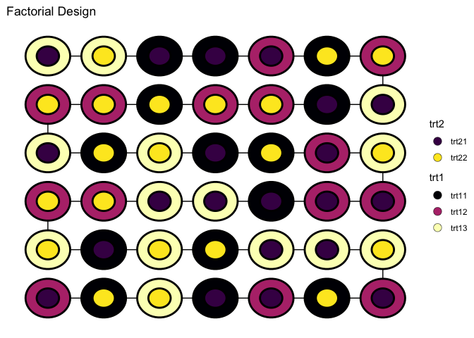
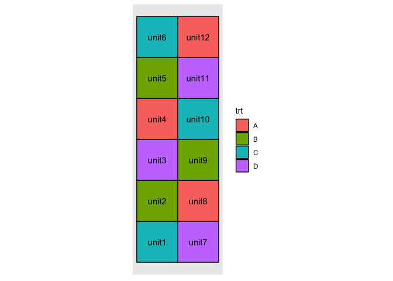
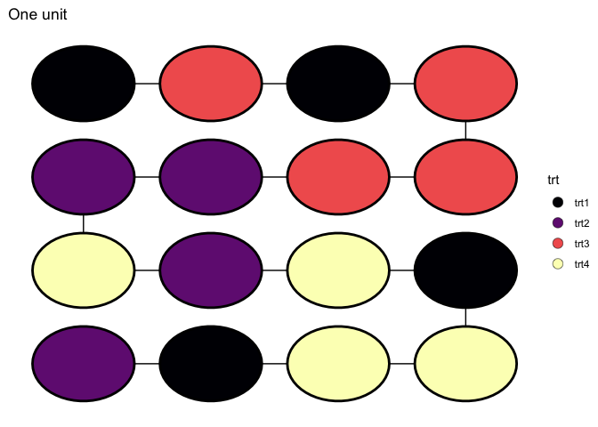
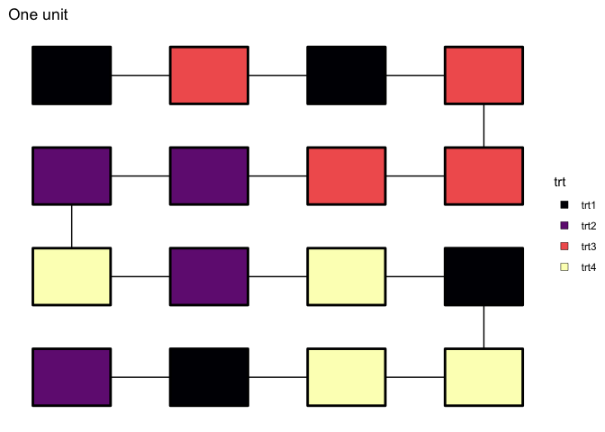
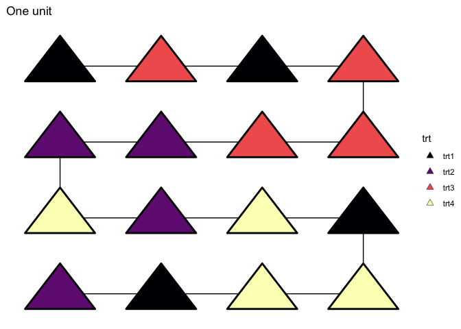
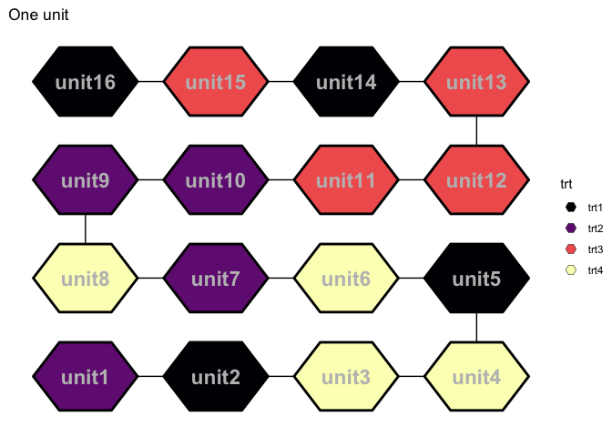

The aim for deggust R-package is to visualise designs constructed from the edibble R-package. The visualisation are ggplot graphics.
(WIP)
Installation
The development version from GitHub with:
# install.packages("devtools")
devtools::install_github("emitanaka/deggust")Recipe experimental designs
You can see deggust::autoplot() used in various edibble designs at https://emitanaka.org/edibble-book/cookbook.html. Some samples are below.
Examples
fac <- takeout(menu_factorial(trt = c(3, 2)))
fac
#> start_design("Factorial Design") %>%
#> set_units(unit = 42) %>%
#> set_trts(trt1 = 3,
#> trt2 = 2) %>%
#> allot_trts(~unit) %>%
#> assign_trts("random", seed = 440) %>%
#> serve_table()
#>
#> # Factorial Design
#> # An edibble: 42 x 3
#> unit trt1 trt2
#> * <unit(42)> <trt(3)> <trt(2)>
#> 1 unit1 trt12 trt21
#> 2 unit2 trt11 trt22
#> 3 unit3 trt13 trt22
#> 4 unit4 trt11 trt21
#> 5 unit5 trt12 trt21
#> 6 unit6 trt11 trt22
#> 7 unit7 trt12 trt21
#> 8 unit8 trt13 trt22
#> 9 unit9 trt13 trt21
#> 10 unit10 trt13 trt21
#> # … with 32 more rows
autoplot(fac)
hyper_graeco <- takeout(menu_hyper_graeco(t = 6))
hyper_graeco
#> start_design("Hyper-Graeco-Latin Square Design") %>%
#> set_units(block1 = 6,
#> block2 = 6,
#> block3 = 6,
#> block4 = 6,
#> unit = ~block1:block2:block3:block4) %>%
#> set_trts(trt = 6) %>%
#> allot_trts(trt ~ unit) %>%
#> assign_trts("random", seed = 253) %>%
#> serve_table()
#>
#> # Hyper-Graeco-Latin Square Design
#> # An edibble: 1,296 x 6
#> block1 block2 block3 block4 unit trt
#> * <unit(6)> <unit(6)> <unit(6)> <unit(6)> <unit(1k)> <trt(6)>
#> 1 block11 block21 block31 block41 unit1 trt3
#> 2 block12 block21 block31 block41 unit2 trt6
#> 3 block13 block21 block31 block41 unit3 trt1
#> 4 block14 block21 block31 block41 unit4 trt5
#> 5 block15 block21 block31 block41 unit5 trt2
#> 6 block16 block21 block31 block41 unit6 trt4
#> 7 block11 block22 block31 block41 unit7 trt1
#> 8 block12 block22 block31 block41 unit8 trt3
#> 9 block13 block22 block31 block41 unit9 trt4
#> 10 block14 block22 block31 block41 unit10 trt2
#> # … with 1,286 more rows
autoplot(hyper_graeco)
Automatic look into the design layout:
unit1 <- start_design(name = "One unit") %>%
set_trts(trt = 4) %>%
set_units(unit = 16) %>%
allocate_trts(trt ~ unit) %>%
randomise_trts() %>%
serve_table()
#> Warning: `randomise_trts` is deprecated. Please use `assign_trts("random")`
#> instead.
#> Warning: `allocate_trts` is deprecated. Please use `allot_trts` instead.
autoplot(unit1)
Easy to replace the unit shape:
autoplot(unit1, shape = "box")
autoplot(unit1, shape = "triangle")
autoplot(unit1, shape = "hexagon",
text = element_text(size = 6,
color = "gray",
face = "bold")) 